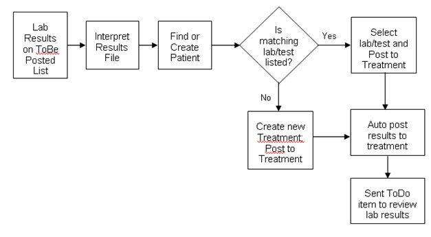

- Purpose
- Before You Begin
- Steps
- Want to Learn More?
- Related Solutions
- Related Education Opportunities
Purpose
When you first begin bringing in lab results using the Lab/EncounterPRO integration, there will be a number of lab results for which the system cannot find a matching lab/test treatment. This is due to the mapping that needs to be defined for each practice.
When no match is found in the mapping between the lab ID from the lab facility (for example, LabCorp) and the treatment in EncounterPRO, you will need to select the appropriate lab/test using the manual posting procedure.
After you have made that mapping 'connection' once, EncounterPRO remembers which lab ID to match to that treatment for all subsequent patients. In many cases, the lab ID from the lab facility will be used for multiple treatments within EncounterPRO, for example the many Urinalysis tests available in EncounterPRO may all have the same lab ID in LabCorp. EncounterPRO allows you to map one lab ID to multiple EncounterPRO treatments.
You will need to make the mapping 'connection' for each lab ID/treatment combination once in EncounterPRO. EncounterPRO will learn your mappings as you manually post lab results. No set up is required for mapping prior to using the lab integration.
Before You Begin
The flow for manually posting lab results is depicted below:

Steps
Follow the steps below:
- From the Utilities tab, select Scan/Post Images. The imported lab results will appear in the list with the caption JMJ Document (or the name of the lab sending the results).
- If a matching patient is not found, the system will display a list of patients matching the information in the file. Select the appropriate patient from the list or change the search criteria to search for additional patients.
 NOTE: If you are sure that the patient is not in the database, you can use the New Patient button to add a new patient to the database. This should be done with caution, since receiving a lab result for a patient NOT in the database is extremely rare.
NOTE: If you are sure that the patient is not in the database, you can use the New Patient button to add a new patient to the database. This should be done with caution, since receiving a lab result for a patient NOT in the database is extremely rare.
- If a matching lab was not found, a list of outstanding labs and tests for the selected patient appears. The description of the results file appears in the description box on the right side of the screen.
- If the appropriate lab or test appears on the list, select it then select Post to Treatment. This will set up a match between that lab facility's lab ID and the EncounterPRO treatment ID so that in the future, the system will be able to automatically match the results file to that lab observation. A Tasks will be dispatched to the default addressee to review the lab.
- If the appropriate lab or test does not appear on the list, you can create a new treatment. (This happens when the lab was not ordered in EncounterPRO.)
a. Select the appropriate Treatment Type.
b. Select the gray box for Select Treatment. Select the appropriate lab or test.
c. Select the New Treatment button. The To Be Posted list reappears.
Want to Learn More?
Related Solutions
Concept: Lab Integration
How to: Order a Lab - Lab Integration.
How to: Track and Manage Lab Results - Lab Integration.
Related Education Opportunities
Clinical Staff
Provider